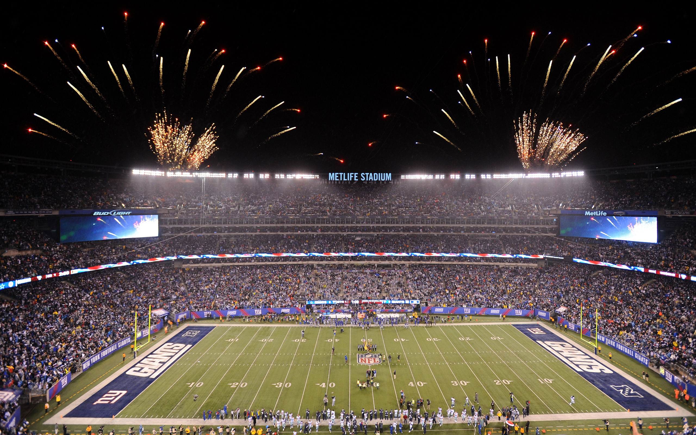
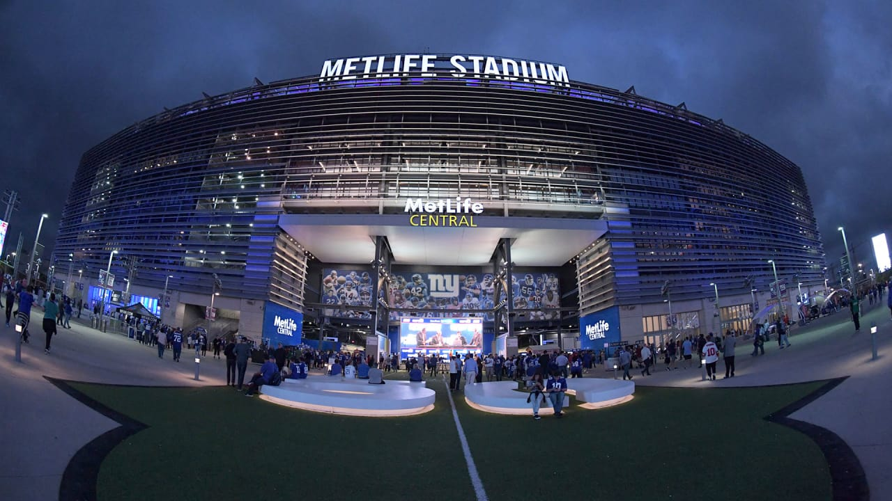
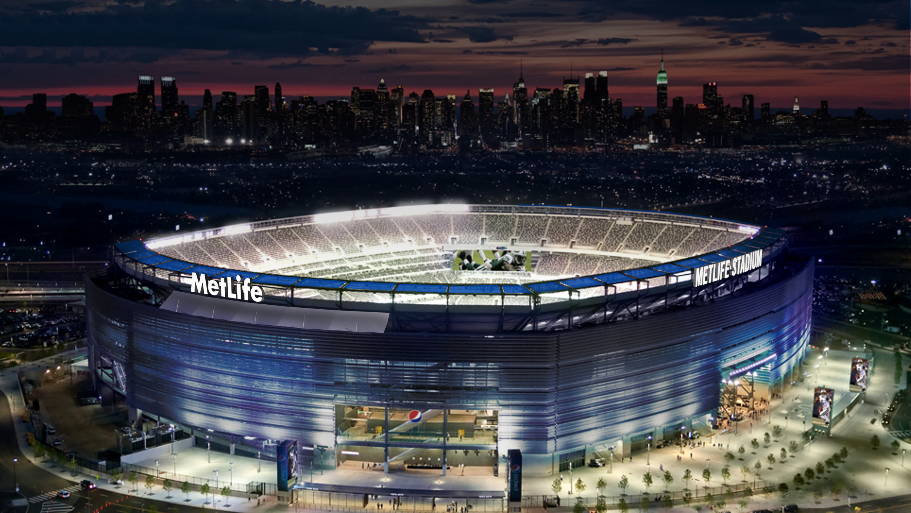
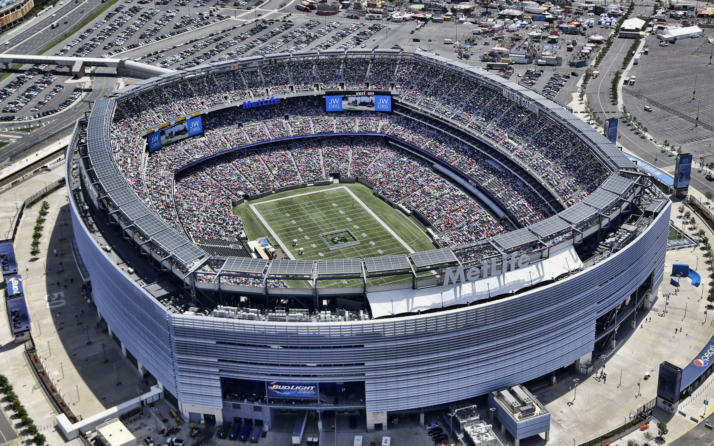

Stadion képek
Kattintson a képekre a megtekintésért:




×

Története
Mire a Giants Stadium megközelítette a 30 éves kort, addigra az egyik legöregebb stadionná vált az NFL-ben. A New York Jets, aki a kisebb bérlő volt a Meadowlandsen, arra törekedett, hogy saját stadiont építsen. A manhattani West Side rendező-pályaudvar fölé tervezett West Side Stadium végül a jelentős állami támogatás hiánya miatt nem valósult meg. Amikor ez a terv elbukott a Jets partnerségre lépett a Giantsszel annak érdekében, hogy közösen építsenek fel egy új, korszerű stadiont, amit a két csapat egyenrangúan tudhat a magáénak.
Kialakitása
A stadion homlokzata egy alumínium rácsokból álló külső héjjal rendelkezik, melyet a belső oldaláról világítanak meg azzal a színnel, amelyik csapat éppen hazai pályán játszik.[9] Ez a müncheni Allianz Arena koncepcióját követve lett megtervezve, amely a MetLife Stadiumhoz hasonlóan a város két nagy labdarúgó klubjának ad otthont, a Bayern Münchennek és az 1860 Münchennek. Az új stadion külseje a korábbi Giants Stadiummal ellentétben könnyen, néhány óra leforgása alatt átalakítható a másik csapat arculatához. A különleges lamellák és a hozzá tartozó felfüggesztési rendszer egyedi tervezésű, mely a hong kongi Overgaard Ltd. és az iowai Architectural Wall Systems of Des Moines közös munkájából született meg. A lamellák teljes hossza pontosan 50 000 méter (50 km). A nézőtér első sora a félpályánál (vagyis az 50 yardos vonalnál) 14 méteres távolságra van az oldalvonaltól, amely a legkisebb távolság az összes NFL stadionban. A pálya dekorációjának megváltoztatását két 4 fős csapat végzi el körülbelül 18 óra alatt, mely során a műfű 40 mezőjét cserélik ki, hogy a célterületeken a hazai pályán játszó csapat felirata legyen látható. A legtöbb NFL-es stadionnal ellentétben ennek a pályának a közepén nem a csapat logója látható, hanem az NFL logó van felfestve, melynek legfőbb oka, hogy a középső cserélhető rész miatt 2010 augusztusában Domenik Hixonnak elszakadt az elülső keresztszalagja egy edzőtábori gyakorlás során a stadionban.